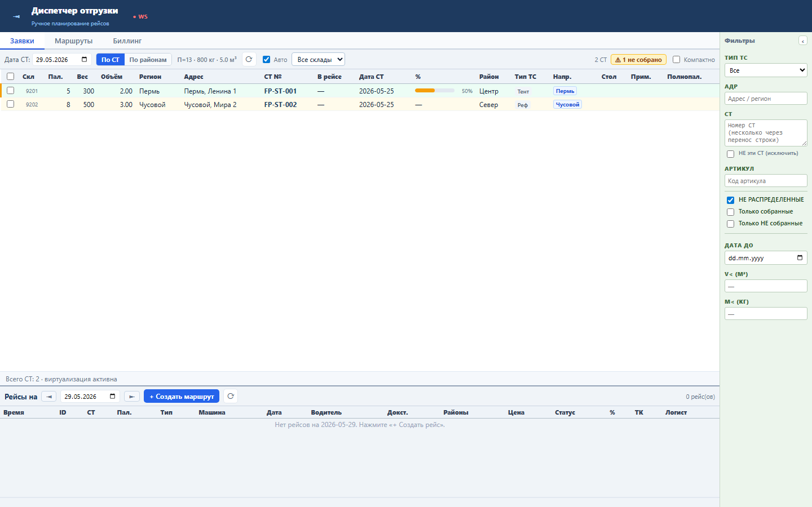
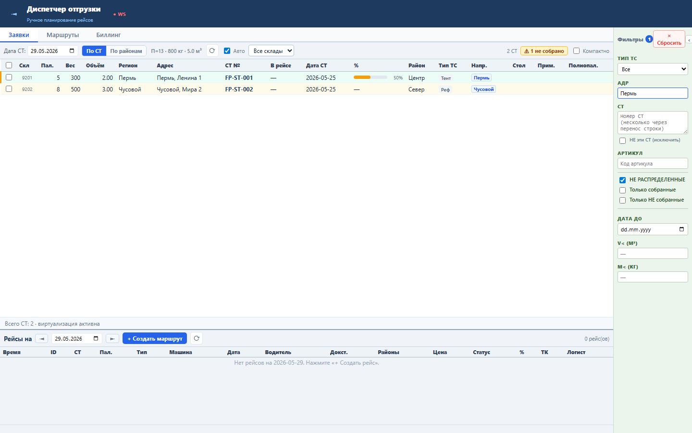
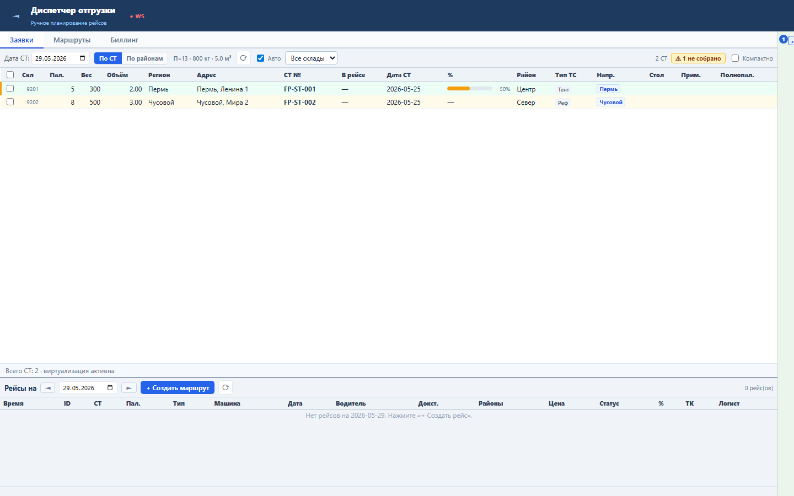
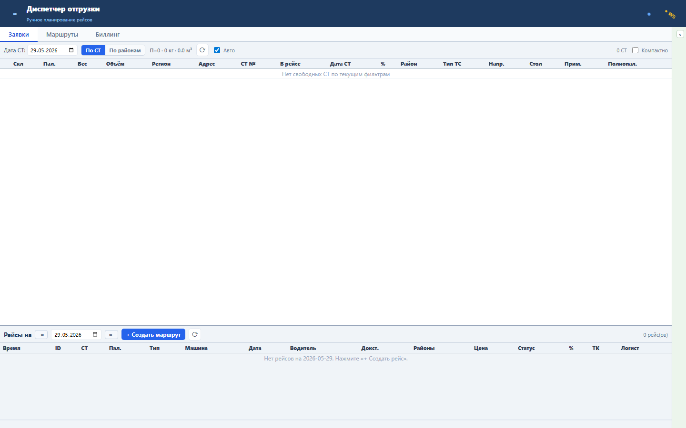

Блок освобождает горизонтальное место в диспетчерской таблице, когда фильтры уже настроены или временно не нужны.
Состояние хранится в fpCollapsed и сохраняется в localStorage.tms_fpCollapsed. При активных фильтрах в свернутом состоянии остается компактный бейдж.
Sprint 53 закрыт functional, load и UI smoke проверками.



